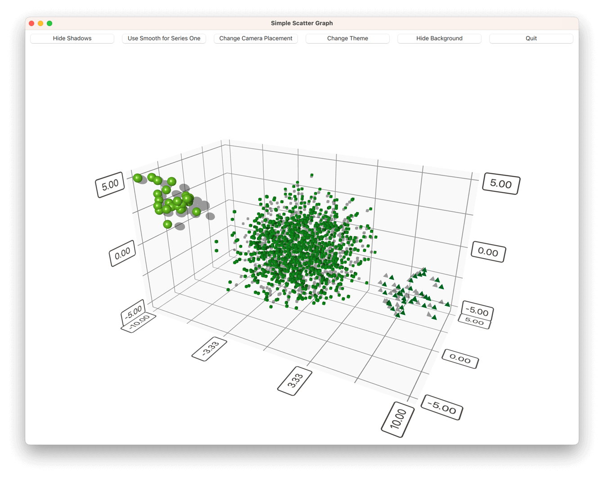

Simple Scatter Graph
Using Scatter3D in a QML application.
Simple Scatter Graph shows how to make a simple scatter graph visualization using Scatter3D and QML.
For instructions about how to interact with the graph, see this page.
For instructions on how to create a new Qt Quick application of your own, see Qt Creator help.

Running the Example
To run the example from Qt Creator, open the Welcome mode and select the example from Examples. For more information, visit Building and Running an Example.
Application Basics
Before diving into the QML code, take a look at the application main.cpp.
This application implements a 'Quit' button in the UI, so you want to connect the QQmlEngine::quit() signal to the application's QWindow::close() slot:
QObject::connect(viewer.engine(), &QQmlEngine::quit, &viewer, &QWindow::close);
To make deployment a little simpler, gather all of the application's .qml files to a resource file (qmlscatter.qrc):
<RCC>
<qresource prefix="/">
<file>qml/qmlscatter/Data.qml</file>
<file>qml/qmlscatter/main.qml</file>
</qresource>
</RCC>
This also requires setting the main.qml to be read from the resource (qrc:):
viewer.setSource(QUrl("qrc:/qml/qmlscatter/main.qml"));
When using cmake instead of qmake, the .qml files are added into a QML module in the CMakeLists.txt instead:
qt6_add_qml_module(qmlscatter
URI Scatter
VERSION 1.0
NO_RESOURCE_TARGET_PATH
QML_FILES
qml/qmlscatter/Data.qml
qml/qmlscatter/main.qml
)
Finally, make the application run in a maximized window:
viewer.showMaximized();
Setting up the Graph
First, import all the needed QML modules:
import QtQuick import QtQuick.Controls import QtDataVisualization
Then, create the main Item and call it mainView:
Item { id: mainView
Then, add another Item inside the main Item, and call it dataView. This will be the item to hold the Scatter3D graph. Anchor it to the parent bottom:
Item { id: dataView anchors.bottom: parent.bottom
Next, add the Scatter3D graph itself. Add it inside the dataView and name it scatterGraph. Make it fill the dataView:
Scatter3D { id: scatterGraph anchors.fill: parent
Now the graph is ready for use, but has no data. It also has the default axes and visual properties.
Next, modify some visual properties first by adding the following inside scatterGraph:
theme: themeQt shadowQuality: AbstractGraph3D.ShadowQualityHigh scene.activeCamera.cameraPreset: Camera3D.CameraPresetFront
A customized theme was added, the shadow quality changed, and the camera position adjusted. The other visual properties are fine, so there is no need to change them.
The custom theme is based on a predefined theme, Theme3D.ThemeQt, but the font in it is changed:
Theme3D { id: themeQt type: Theme3D.ThemeQt font.pointSize: 40 }
Then, start feeding the graph some data.
Adding Data to the Graph
Create a Data item inside the mainView and name it seriesData:
Data { id: seriesData }
The seriesData item contains the data models for all three series used in this example.
This is the component that holds the data in Data.qml. It has an Item as the main component.
In the main component, add the data itself to a ListModel and name it dataModel:
ListModel { id: dataModel ListElement{ xPos: -10.0; yPos: 5.0; zPos: -5.0 } ...
Add two more of these to the other two series, and name them dataModelTwo and dataModelThree.
Then, expose the data models to be usable from main.qml. Do this by defining them as aliases in the main data component:
property alias model: dataModel property alias modelTwo: dataModelTwo property alias modelThree: dataModelThree
Now you can use the data from Data.qml with scatterGraph in main.qml. First, add a Scatter3DSeries and call it scatterSeries:
Scatter3DSeries { id: scatterSeries
Then, set up selection label format for the series:
itemLabelFormat: "Series 1: X:@xLabel Y:@yLabel Z:@zLabel"
And finally, add the data for series one in a ItemModelScatterDataProxy. Set the data itself as the itemModel for the proxy:
ItemModelScatterDataProxy { itemModel: seriesData.model xPosRole: "xPos" yPosRole: "yPos" zPosRole: "zPos" }
Add the other two series in the same way, but modify some series-specific details a bit:
Scatter3DSeries { id: scatterSeriesTwo itemLabelFormat: "Series 2: X:@xLabel Y:@yLabel Z:@zLabel" itemSize: 0.05 mesh: Abstract3DSeries.MeshCube ...
Then, modify the properties of the default axes in scatterGraph a bit:
axisX.segmentCount: 3 axisX.subSegmentCount: 2 axisX.labelFormat: "%.2f" axisZ.segmentCount: 2 axisZ.subSegmentCount: 2 axisZ.labelFormat: "%.2f" axisY.segmentCount: 2 axisY.subSegmentCount: 2 axisY.labelFormat: "%.2f"
After that, add a few buttons to the mainView to control the graph, one of which is shown as an example:
Button { id: shadowToggle width: mainView.buttonWidth // Calculated elsewhere based on screen orientation anchors.left: parent.left anchors.top: parent.top anchors.margins: 5 text: scatterGraph.shadowsSupported ? "Hide Shadows" : "Shadows not supported" enabled: scatterGraph.shadowsSupported onClicked: { if (scatterGraph.shadowQuality === AbstractGraph3D.ShadowQualityNone) { scatterGraph.shadowQuality = AbstractGraph3D.ShadowQualityHigh; text = "Hide Shadows"; } else { scatterGraph.shadowQuality = AbstractGraph3D.ShadowQualityNone; text = "Show Shadows"; } } }
Then, modify dataView to make some room for the buttons at the top:
Item { id: dataView anchors.bottom: parent.bottom width: parent.width // Adjust the space based on screen orientation: // If we're in portrait mode, we have 3 rows of buttons, otherwise they are all in one row. height: parent.height - (mainView.portraitMode ? shadowToggle.implicitHeight * 3 + 25 : shadowToggle.implicitHeight + 10) ...
And you're done!